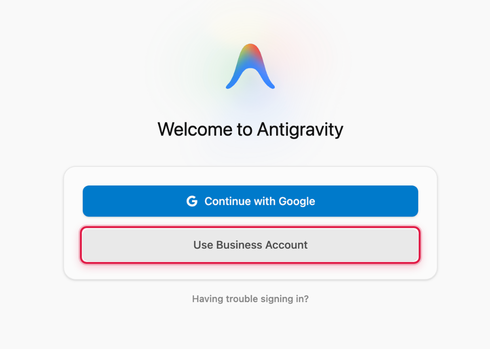

LAB 0 · 필수 완주
개인 Gmail 로그인 금지
기업 계정 로그인 & 무중단 제어 (CLI · AGY 2.0 · VS Code)
Step 0-1. 3대 개발 표면에서 기업 계정 로그인 완료하기전원 체크포인트
- 1️⃣ Antigravity 2.0 앱: 첫 화면 회색 Use Business Account 클릭 ➔ 파란색 Continue with Google Cloud 클릭 ➔ 기업 계정 로그인 및 GCP 프로젝트 선택
- 2️⃣ Antigravity CLI: 터미널에서
agy실행 ➔/login입력 ➔ Use Business Account ➔ Continue with Google Cloud 완료 후/context실행 - 3️⃣ VS Code Extension: 마켓플레이스에서
Google Antigravity(google.google-antigravity) 설치 후 Continue with Google Cloud로 로그인



Step 0-2. Turbo 모드 · Send Immediately · /btw 무중단 제어실시간 조향
- 1️⃣ 하단 실행 모드를 Turbo로 맞추고, 작업 도중 궁금한 점은
/btw로 흐름 중단 없이 질문합니다. - 2️⃣ 코딩 중인 에이전트에게 조건을 추가할 때는 중지(Stop) 대신 Send Immediately를 눌러 즉시 반영합니다.
현재 폴더 안의 실습 파일 이름과 각각의 역할을 한 줄씩 요약해줘